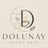
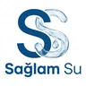
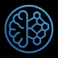

Watchly: What To Watch
8 dil destekli film ve dizi keşif uygulaması. 240'tan fazla kayıtlı kullanıcı, arkadaşlarla ortak izleme listeleri ve 13 Cloud Function ile çalışan sunucusuz arka uç.
2024'ten bu yana yaptığım 10 proje. Her birine tıklayıp mimarisini, kullandığım araçları ve karşılaştığım teknik detayları inceleyebilirsiniz.
8 dil destekli film ve dizi keşif uygulaması. 240'tan fazla kayıtlı kullanıcı, arkadaşlarla ortak izleme listeleri ve 13 Cloud Function ile çalışan sunucusuz arka uç.
Toprak ve hava sensörlerine göre sulama kararı veren, mobil uygulamadan izlenebilen sistem. Robotistan'ın 100 proje seçtiği programa kabul edildi.

MapLibre üzerinde ~56 bin ağaç ve 3B binalarla modellenen kampüs ikizi. 5 yıllık bütçe, enerji ve karbon salımı simülasyonu + PDF politika raporu.


127 ürünlü TR/EN alerjen detaylı QR menü, Google Maps yol tarifi ve işletmenin fiyatları telefondan değiştirebildiği PWA yönetim paneli.

İplik sarım makineleri üreten firma için Türkçe ve İngilizce çok sayfalı tanıtım sitesi. Makine kataloğu, üretim fotoğraf/videoları ve hızlı iletişim kanalları.


Firebase Realtime Database'den beslenen çoklu marka su satış kataloğu, tek tıkla WhatsApp sipariş taslağı ve işletme için native Android yönetim paneli.


Google Bard doğal dil katmanı, Firebase Auth/Realtime Database senkronizasyonu, CameraX + ML Kit barkod okuyucu ve 50+ dilde çeviri sunan kişisel Android asistanı.

Admin ve muhasebe panelleri olan JavaFX stok takip uygulaması. Özel bağlı liste yapısı, son kullanma tarihi kontrolü ve Maven Shade ile tek JAR paketleme.
Engellerden kaçarak otonom devriye gezen, üç yönden alev kaynağını algılayıp yaklaştığında fanıyla söndüren Arduino robotu.

Kotlin ve XML öğrenirken yaptığım ilk uygulama. Çocuklar için SQLite tabanlı, jokerli ve jeton ekonomili üç aşamalı eğitim oyunu.